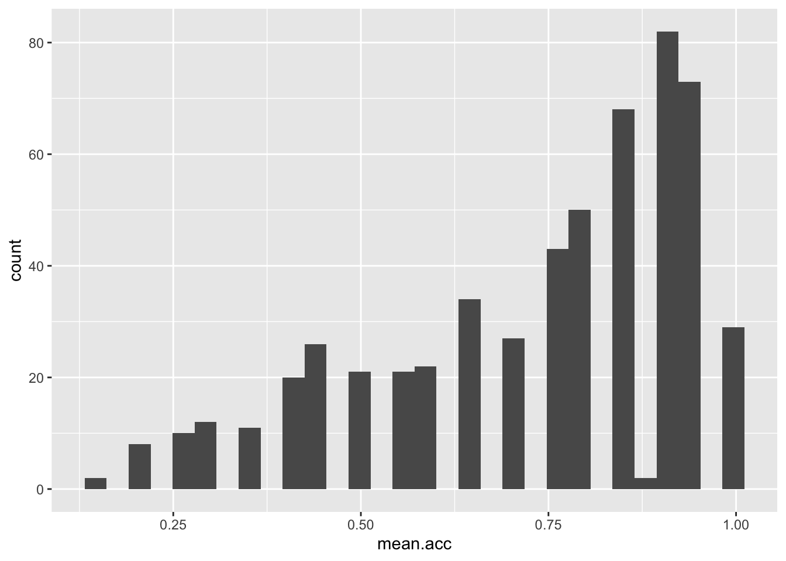
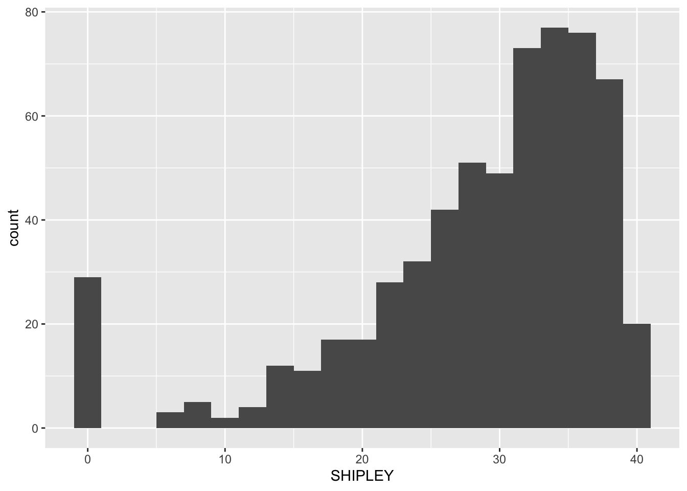
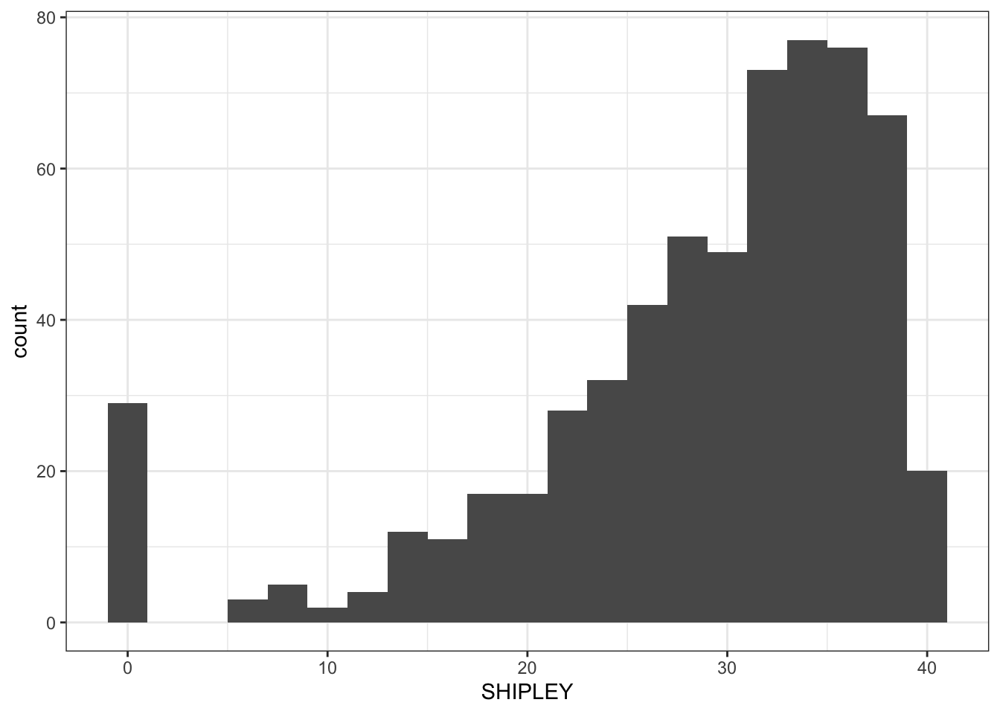
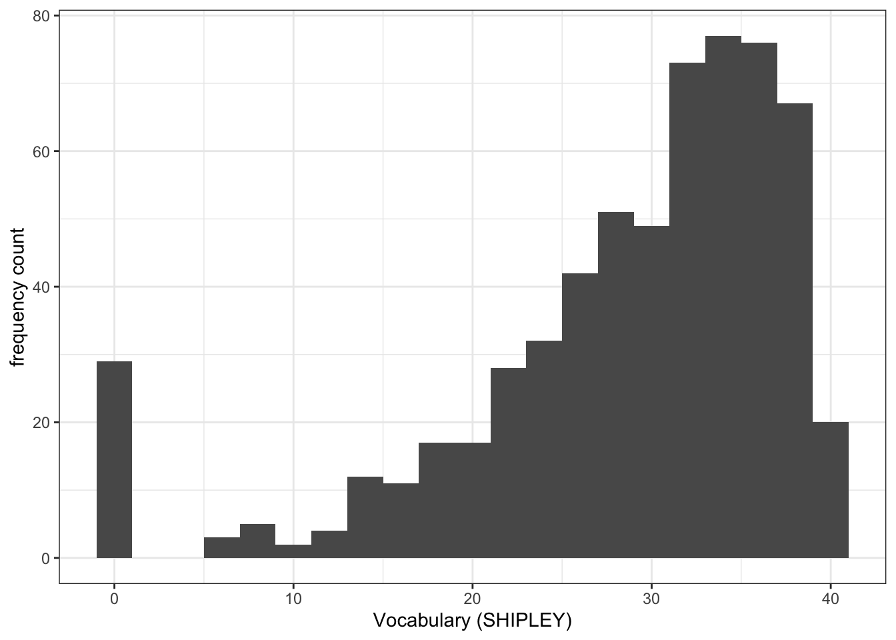
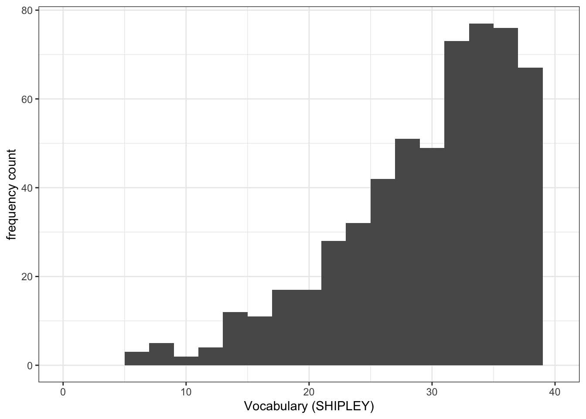
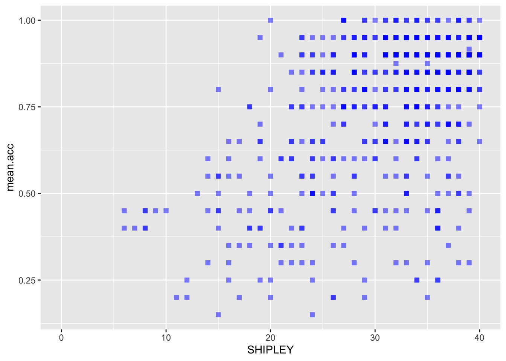
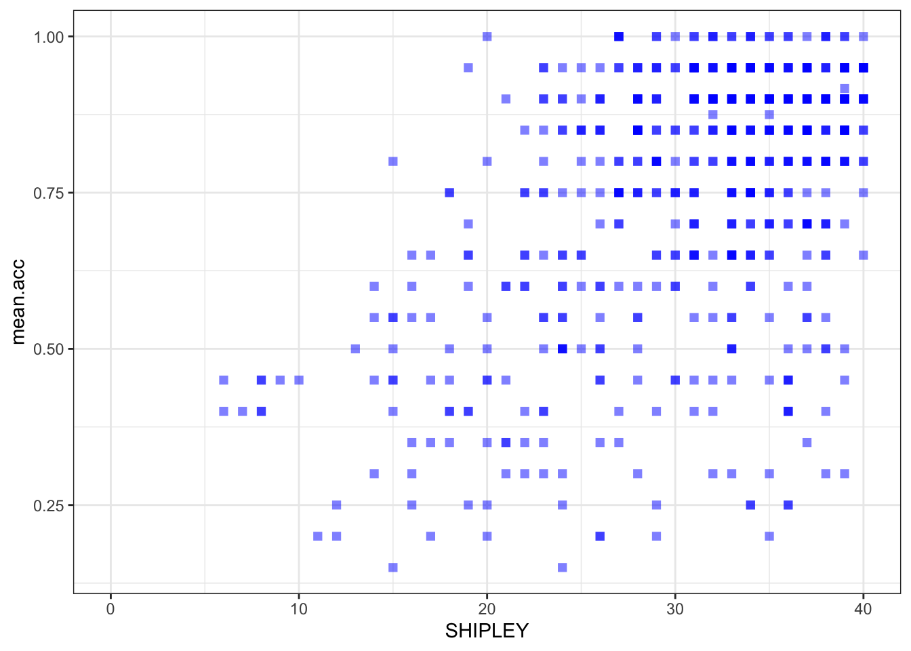
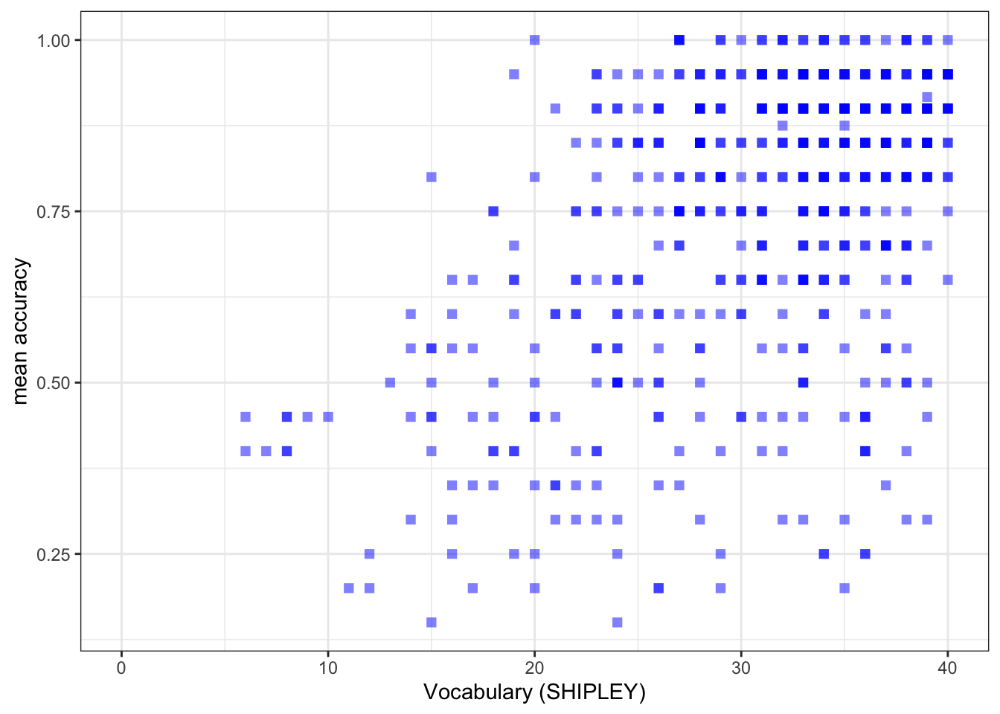
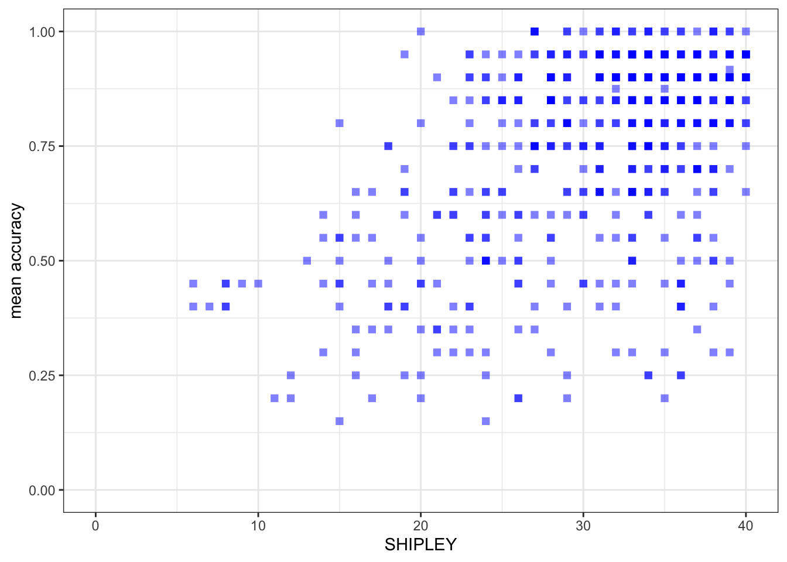
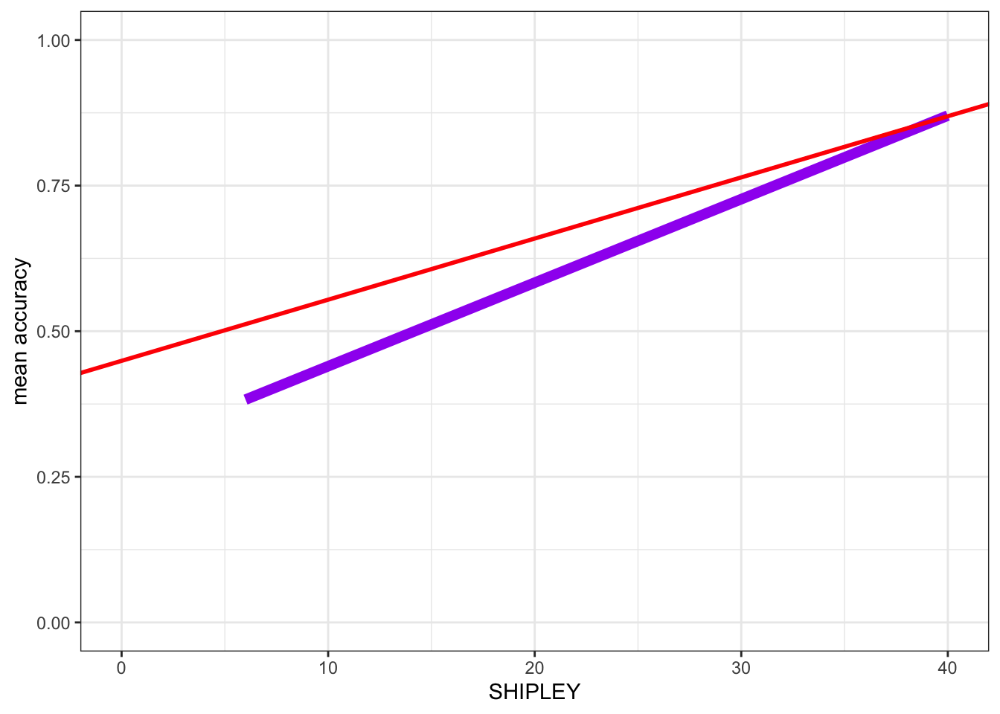

| ResponseId | mean.acc | mean.self | AGE | GENDER | EDUCATION | ETHNICITY | SHIPLEY | HLVA | FACTOR3 | NATIVE.LANGUAGE | study |
|---|---|---|---|---|---|---|---|---|---|---|---|
| R_1lcaBAGJNNI2kju | 1.00 | 7.6 | 18 | Female | Further | White | 31 | 10 | 48 | English | PSYC122 |
| R_AG4jiTm8oxmuOOZ | 0.90 | 7.6 | 18 | Female | Further | White | 35 | 10 | 40 | English | PSYC122 |
| R_2Ckb6YXLPGwYSvg | 0.95 | 7.2 | 18 | Male | Further | Asian | 35 | 9 | 47 | Other | PSYC122 |
| R_27JY5xHHcMs7jGi | 0.90 | 6.8 | 18 | Female | Further | White | 35 | 8 | 52 | English | PSYC122 |
| R_1DtJ4mrOXmxre01 | 0.85 | 6.4 | 19 | Female | Further | White | 33 | 9 | 41 | English | PSYC122 |
| R_PRFQFInzSS6T8e5 | 0.90 | 6.2 | 19 | Female | Further | Mixed | 36 | 5 | 52 | English | PSYC122 |
6 Developing the linear model
6.1 Overview
Welcome to your overview of the work we will do together in Week 10.
This week, we focus on strengthening your ability to apply the linear model approach to a wider range of research questions.
In the context of the Clearly understood project, we frame our analysis concerns and methods in relation to example research questions, including the question:
- What person attributes predict success in understanding?
This is to help you to learn to think critically about what it is you want to do with linear models when you use them, or read about their results.
It will be seen that to answer research questions like this example question, we will need to think about how we analyze data when multiple different predictor variables could be included in our model.
Most of the time, in your future professional work, when you use linear models you will be trying to predict outcomes (behaviours, person attributes) given information from multiple different predictor variables at once. You will be able to do this work using what you learn this week.
As students, now, learning how to move from analyses involving one outcome and one predictor variable, to analyses involving one outcome and multiple outcome variables unlocks a much wider range of contexts in which you can apply the skills and understanding you develop here to address research problems and questions of your own.
6.2 Our learning goals
We will learn how to:
- Skills – extend our capacity to code models so that we can incorporate multiple predictors;
- Concepts – develop the critical thinking processes required to make decisions about what predictors to include when you code your model;
- Concepts and skills – learn how to critically evaluate results, given variation between samples.
We will revise how to:
- Skills – identify and interpret model statistics;
- Concepts and skills – critically evaluate the results;
- Concepts and skills – communicate the results.
As we progress, we will continue to strengthen your skills in building professional visualizations. This week, we will learn how to exploit professional tools to automatically generate and plot model predictions, when previously we produced model predictions by hand.
6.3 Learning resources
You will see, next, the lectures we share to explain the concepts you will learn about, and the practical data analysis skills you will develop (Section 6.3.1). Then you will see information about the practical materials you can use to build and practise your skills (Section 6.3.2).
Every week, you will learn best if you first watch the lectures then do the practical exercises.
Linked resources
- In Chapter 2, we share materials to support your development of critical thinking about associations, and your development of practical skills in working with correlation-based analyses.
- In Chapter 5, we introduce you to the main ideas and practical steps involved in conducting linear model analyses.
6.3.1 Lectures
The lecture materials for this week are presented in four short parts.
Click on a link and your browser should open a tab showing the Panopto video for the lecture part.
- Part 1 (20 minutes) Developing the linear model: The concepts and skills we will learn about in week 10: our aims, the research questions we can answer with linear models, making the move to working with linear models with multiple predictors, why the main challenge is not the coding but the choices over which predictors to include in a model.
- Part 2 (13 minutes): Coding, thinking about, and reporting linear models with multiple predictors.
- Part 3 (21 minutes): Critically evaluating the results of analyses involving linear models.
- Part 4 (19 minutes): The linear model is very flexible, powerful and general.
Download the lecture slides
The slides presented in the videos can be downloaded here:
- The slides exactly as presented (11 MB).
You can download the web page .html file and click on it to open it in any browser (e.g., Chrome, Edge or Safari). The slide images are high quality so the file is quite big and may take a few seconds to download.
We are going to work through some practical exercises, next, to develop your critical thinking and practical skills for working with linear models.
6.3.2 Practical materials: data and R-Studio
We will work with one data file which you can download by clicking on its name (below):
Once you have downloaded the file, you will need to upload it to the R-Studio server to access it so that you can do the practical exercises.
Important
Here is a link to the sign-in page for R-Studio Server
6.3.3 Practical materials guide
As usual, you will find that the practical exercises are simpler to do if you follow these steps in order.
- The data — We will take a quick look at what is inside the data files so you know what everything means.
- The
how-toguide — We will go through the practical analysis and visualization coding steps, showing all the code required for each step. - The
practicalexercises — We will set out the tasks, questions and challenges that you should complete to learn the practical skills we target this week.
This week — Week 10 — we aim to further develop skills in working with the linear model, and in visualizing and testing the associations between variables in psychological data.
- While we build on everything you have learned so far, the skills you learn in this class unlock your capacity to analyse most kinds of data you will encounter in most situations: a big expansion in the scope of your capacities.
Week 10 parts
- Set-up
- Load the data
- Revision: using a linear model to answer research questions – one predictor.
- New: using a linear model to answer research questions – multiple predictors.
- New: plot predictions from linear models with multiple predictors.
- New: estimate the effects of factors as well as numeric variables.
- New: examine associations comparing data from different samples.
We learn these skills so that we can answer research questions like:
- What person attributes predict success in understanding?
Questions like this are often answered by analyzing psychological data using some form of linear model.
As usual, when we do these analyses, we need to think about how we report the results, so part of the learning you will complete will enable you to:
- report information about the kind of model you specify;
- report the nature of the associations (or effects) estimated in your model;
- evaluate the results, making decisions about (i.) the significance of effects (ii.) whether estimates of effects suggest a positive or negative relationship between outcome and predictor (iii.) whether estimates of effects suggest a strong or a weak relationship.
We will really strengthen your ability to produce professional visualizations by learning how to translate model results into plots that help you and your audience to translate what your model tells you into accurate understanding and plain language.
6.3.3.1 The data files
Each of the data files we have worked with has had a similar structure. This week, that continuity remains. But, this week, we move on to working with a big data-set similar to the data you may encounter in real-world situations.
- What is new about this data-set is that it holds data from multiple studies in which the same methods were used – these are replication studies – enabling us to look the questions about results reproducibility across studies that you have been hearing about.
Here are what the first few rows in the data file all.studies.subjects looks like:
Tip
The webpage has a slider under the data table window, so you can scroll across the columns: move your cursor over the window to show the slider.
When you look at the data table, you can see the columns:
ResponseIdparticipant codemean.accaverage accuracy of response to questions testing understanding of health guidancemean.selfaverage self-rated accuracy of understanding of health guidancestudyvariable coding for what study the data were collected inAGEage in yearsHLVAhealth literacy test scoreSHIPLEYvocabulary knowledge test scoreFACTOR3reading strategy survey scoreGENDERgender codeEDUCATIONeducation level codeETHNICITYethnicity (Office National Statistics categories) code
You can now see a new column:
NATIVE.LANGUAGEwhich codes for what language study participants grew up speaking (English, Other)
6.3.3.2 The how-to guide
We will take things step-by-step.
Make sure you complete each part, task and question, in order, before you move on to the next one.
6.3.3.3 How-to Part 1: Set-up
To begin, we set up our environment in R.
6.3.3.3.1 How-to Task 1 – Run code to empty the R environment
rm(list=ls()) 6.3.3.3.2 How-to Task 2 – Run code to load libraries
Load libraries using library().
library("patchwork")
library("tidyverse")6.3.3.4 How-to Part 2: Load the data
6.3.3.4.1 How-to Task 3 – Read in the data file we will be using
The code in the how-to guide was written to work with the data file:
study-one-general-participants.csv.
Read in the data file – using read_csv().
all.studies.subjects <- read_csv("study-one-general-participants.csv")
Tip
Last week, we started working with the online help information on R functions.
Let’s build on that.
You can read the technical information about the read_csv() function here:
https://readr.tidyverse.org/reference/read_delim.html
- Take a look around the
{tidyverse}webpages: expert professionals use information like this whenever they try to figure out how to do something.
6.3.3.4.2 How-to Task 4 – Inspect the data file
Use the summary() function to take a look.
summary(all.studies.subjects) ResponseId mean.acc mean.self AGE
R_1lcaBAGJNNI2kju: 1 Min. :0.150 Min. :1.000 Min. : 18.00
R_AG4jiTm8oxmuOOZ: 1 1st Qu.:0.600 1st Qu.:5.600 1st Qu.: 20.00
R_2Ckb6YXLPGwYSvg: 1 Median :0.800 Median :6.800 Median : 23.00
R_27JY5xHHcMs7jGi: 1 Mean :0.734 Mean :6.529 Mean : 28.34
R_1DtJ4mrOXmxre01: 1 3rd Qu.:0.900 3rd Qu.:7.800 3rd Qu.: 30.50
R_PRFQFInzSS6T8e5: 1 Max. :1.000 Max. :9.000 Max. :100.00
(Other) :609 NA's :54 NA's :54
GENDER EDUCATION ETHNICITY SHIPLEY
Female :433 Further :229 White:258 Min. : 0.00
Male :176 Secondary: 66 Asian:332 1st Qu.:25.00
Prefer-not-to-say: 2 Higher :320 Mixed: 14 Median :32.00
Non-Binary : 1 Black: 8 Mean :28.98
prefer-not-to-say: 3 Other: 3 3rd Qu.:36.00
Max. :40.00
HLVA FACTOR3 NATIVE.LANGUAGE study
Min. : 0.000 Min. : 0.00 English:285 KA :163
1st Qu.: 5.000 1st Qu.:41.00 Other :330 ZW :130
Median : 8.000 Median :48.00 PSYC122 :107
Mean : 7.224 Mean :44.03 PSYC304.rw: 87
3rd Qu.: 9.500 3rd Qu.:53.00 PSYC304.jg: 60
Max. :13.000 Max. :63.00 PSYC304.ml: 36
(Other) : 32
Tip
summary()will give you either descriptive statistics for variable columns classified as numeric or will tell you that columns in the dataset are not numeric.
6.3.3.5 How-to Part 3: Developing histograms to examine the distributions of variables
6.3.3.5.1 How-to Task 5 – Edit histogram plotting code to visualize distributions like a pro
You have seen how to produce histograms before, in a previous class (week 3): here we are consolidating skills by practising them in different contexts, using different data.
We extend your skills by adding some new moves.
When we learn about creating a plot, it helps us to identify what each code element is doing. Here’s an example: run the line of code and see the result in the Plots window in R-Studio:
ggplot(data = all.studies.subjects, aes(x = mean.acc)) + geom_histogram()`stat_bin()` using `bins = 30`. Pick better value with `binwidth`.Warning: Removed 54 rows containing non-finite outside the scale range
(`stat_bin()`).
These are the plotting code elements and what they are doing:
ggplot(...)you tell R you want to make a plot using theggplot()function;ggplot(data = all.studies.subjects ...)you tell R you want to make a plot with theall.studies.subjectsdata;ggplot(..., aes(x = mean.acc))you tell R that you want to make a plot with the variablemean.acc;- here, you specify the aesthetic mapping,
x = mean.acc; ggplot(...) + geom_histogram()you tell R you want to show the distribution of values ofmean.accas a geometric object: a histogram.
You have seen the plotting code arranged in two different ways, in one line, as above, or in a series of steps, like this:
ggplot(data = all.studies.subjects, aes(x = mean.acc)) +
geom_histogram()`stat_bin()` using `bins = 30`. Pick better value with `binwidth`.Warning: Removed 54 rows containing non-finite outside the scale range
(`stat_bin()`).
Tip
Notice that it has no impact whether you write the plotting code in one line, or in a series of lines.
R cares very much about how you spell function or variable names.
R does not usually care about line breaks.
Learning what does or does not matter is a key lesson, when you learn a language, whatever the language.
If we break the plotting code into steps, it makes the code easier for you to read, and it will make it easier to add edits, one at a time. Let’s see how that works, next.
To help you learn, we are going to work on editing the code to do things, and we are going to explain why we want to be able to do these things.
These are the things we want to do:
- new – the appearance of the bars using
binwidth; - revision – the colour of the background using
theme_bw(); - revision – the appearance of the labels using
labs(); - new – setting the x-axis limits to reflect the full range of possible scores on the x-axis variable using
xlim(); - new – adding annotation – here, a vertical line using
geom_vline()– to focus the attention of the audience for a plot on specific information about the variable distribution (here, the sample average for the variable).
Tip
- Click on each
Codetab to see how the code changes, and to see how the plot changes as a result. - Click on each
Whytab for an explanation of why we want to do this.
- new – the appearance of the bars using
binwidth
ggplot(data = all.studies.subjects, aes(x = SHIPLEY)) +
geom_histogram(binwidth = 2)
Histogram binwidth has to be a number. The best way to learn what the number tells R to do is to experiment with different values.
- Notice that in the code we set the
binwidthto 2. - If you are producing a histogram,
binwidthhas to be a number larger than the potential minimum and smaller than the potential maximum for the variable you are plotting: so for theSHIPLEYvocabulary test, because the test scores can only range between 0-40, thebinwidthnumber you use in your plotting code has to be bigger than 0 but smaller than 40.
In general, the larger (wider) the binwidth, the less detail you see about the distribution of values in the variable.
- In a histogram, each bar you draw represents a collection of values. The
binwidthtells R how many values to collect together, for each bar. So, the bigger the width, the bigger (wider and taller) the bar because it represents more observations.
Whether or not you want to present detail is then a question concerning your communication aims: do you want to give an impression, or identify a specific detail?
- revision – the colour of the background using
theme_bw()
ggplot(data = all.studies.subjects, aes(x = SHIPLEY)) +
geom_histogram(binwidth = 2) +
theme_bw()
In general, a grey background is argued to be a good way to present information visually but we often use a white background because it helps the plot elements to be visible, especially, for example, if we are giving a presentation.
- revision – the appearance of the labels using
labs()
ggplot(data = all.studies.subjects, aes(x = SHIPLEY)) +
geom_histogram(binwidth = 2) +
theme_bw() +
labs(x = "Vocabulary (SHIPLEY)", y = "frequency count")
You cannot assume that the audience for your plots will understand what you are referring to, if you just use data-set variable names e.g. SHIPLEY. They may not be familiar with your data-set. This means you need to use axis labels that will make sense to most people in your audience.
- new – setting the x-axis limits using
xlim()
ggplot(data = all.studies.subjects, aes(x = SHIPLEY)) +
geom_histogram(binwidth = 2) +
theme_bw() +
labs(x = "Vocabulary (SHIPLEY)", y = "frequency count") +
xlim(0,40)Warning: Removed 2 rows containing missing values or values outside the scale range
(`geom_bar()`).
- It is often useful to set the axis limits like this: because we want to show the audience where the sample values are distributed compared to where they could be distributed, given the measure.
- This makes sense, e.g., if you want to see the relative age distribution of a sample compared to the population, or because we want to give the audience a more accurate picture of the data.
- new – adding annotation – here, a vertical line
ggplot(data = all.studies.subjects, aes(x = SHIPLEY)) +
geom_histogram(binwidth = 2) +
theme_bw() +
labs(x = "Vocabulary (SHIPLEY)", y = "frequency count") +
xlim(0,40) +
geom_vline(xintercept = mean(all.studies.subjects$SHIPLEY), colour = "red", linewidth = 1.5)Warning: Removed 2 rows containing missing values or values outside the scale range
(`geom_bar()`).
Notice that we used the geom_vline() element to plot a vertical line at the location on the x-axis we define.
We do this in the steps:
geom_vline(...)– draw a vertical line;...xintercept...– draw the line so it hits the x-axis (intercepts the x-axis);...xintercept = mean(all.studies.subjects$SHIPLEY...– at a location defined by the mean of the variablemean(all.studies.subjects$SHIPLEY);...colour = "red", size = 1.5..– make the line red and one and a half times the default thickness.
We can use annotations, like this vertical line, when we want to draw the attention of the audience for our plot to a specific feature of the data.
What are we learning here?
You can see that while the data stays the same, the appearance of the plot changes, as we add each edit to the plotting code.
The lesson that we are learning, here, is not just that you can arrange plotting code in steps but that in general in R you can build things (like plots) one action at a time.
Further information you can explore
We can define the limits on the x-axis and on the y-axis, see the {ggplot2} library reference information on setting limits is here:
https://ggplot2.tidyverse.org/reference/lims.html
The {ggplot2} reference information for drawing lines is here:
6.3.3.6 How-to Part 4: Developing scatterplots to examine associations between variables
6.3.3.6.1 How-to Task 6 – Edit scatterplot code to visualize associations like a pro
You have seen these code moves before, in previous classes (weeks 3 and 4): we are consolidating skills by practising your coding in different contexts, using different data.
We extend your skills by adding some new moves.
We create scatterplots to examine the association between pairs of variables. For example, we can draw a scatterplot to examine the association between variation in the values of SHIPLEY and of mean.acc.
ggplot(data = all.studies.subjects, aes(x = SHIPLEY, y = mean.acc)) +
geom_point()Warning: Removed 54 rows containing missing values or values outside the scale range
(`geom_point()`).
The plot code moves through the following steps:
ggplot(...)makes a plot.ggplot(data = all.studies.subjects, ...)uses theall.studies.subjectsdata-set.ggplot(...aes(x = SHIPLEY, y = mean.acc))uses two aesthetic mappings.geom_point()show the mappings as points.
We are now going to edit:
- revision and new – the appearance of the points using alpha, size, shape, and colour;
- revision – the colour of the background using
theme_bw(); - revision – the appearance of the labels using
labs(); - new – the x-axis and y-axis limits using
lim().
We make the changes, one change at a time.
Click on the drop-down view to see the code but, if you want a challenge, first try to write the code on your own, using what you have learned so far.
- revision and new – the appearance of the points using alpha, size, shape, and colour
Code
ggplot(data = all.studies.subjects, aes(x = SHIPLEY, y = mean.acc)) +
geom_point(alpha = 0.5, size = 2, colour = "blue", shape = 'square') Warning: Removed 54 rows containing missing values or values outside the scale range
(`geom_point()`).
- revision – the colour of the background using
theme_bw()
Code
ggplot(data = all.studies.subjects, aes(x = SHIPLEY, y = mean.acc)) +
geom_point(alpha = 0.5, size = 2, colour = "blue", shape = 'square') +
theme_bw()Warning: Removed 54 rows containing missing values or values outside the scale range
(`geom_point()`).
- revision – the appearance of the labels using
labs()
Code
ggplot(data = all.studies.subjects, aes(x = SHIPLEY, y = mean.acc)) +
geom_point(alpha = 0.5, size = 2, colour = "blue", shape = 'square') +
theme_bw() +
labs(x = "Vocabulary (SHIPLEY)", y = "mean accuracy")Warning: Removed 54 rows containing missing values or values outside the scale range
(`geom_point()`).
- new – the x-axis and y-axis limits using
lim()
Code
ggplot(data = all.studies.subjects, aes(x = SHIPLEY, y = mean.acc)) +
geom_point(alpha = 0.5, size = 2, colour = "blue", shape = 'square') +
theme_bw() +
labs(x = "SHIPLEY", y = "mean accuracy") +
xlim(0, 40) + ylim(0, 1)Warning: Removed 54 rows containing missing values or values outside the scale range
(`geom_point()`).
Notice that:
I set the x-axis limits to the minimum (0) and maximum (40) possible values for the
SHIPLEYvariable.I set the y-axis limits to the minimum (0) and maximum (1) possible values for the mean accuracy variable
mean.acc.
What are we learning here?
It is generally a good idea to show the minimum value (the origin) for each variable.
- Not doing this, i.e., showing a more narrow slice of the sample range is an easy way to exaggerate the strength of associations or to imply incorrectly the breadth in variation.
You can change the transparency (alpha), size, colour and shape of important parts of a plot. Here, we are changing the appearance of the points. But you can also change the transparency (alpha), size, colour and shape of reference lines added to a plot.
Further information you can explore
The {ggplot2} geom_point() reference information is here:
https://ggplot2.tidyverse.org/reference/geom_point.html
- where you can see some examples of the edits we have done.
Some useful information about shape options is here:
http://www.cookbook-r.com/Graphs/Shapes_and_line_types/
Some useful information about colour options is here:
Important
Now you: experiment!
6.3.3.7 How-to Part 5: Using correlations to to answer research questions
6.3.3.7.1 How-to Task 7 – Examine the correlation between a pair of variables
In the Clearly understood project, one of our research questions is:
- What person attributes predict success in understanding?
We can answer this question by doing a correlation analysis. This is because we can expect that if vocabulary knowledge predicts success in understanding then variation in vocabulary knowledge should be associated with variation in success of understanding. We measured how successful study participants were in understanding health information: recording outcome mean.acc as the accuracy of response to questions designed to examine understanding. We measured a key person attribute, vocabulary knowledge using the SHIPLEY vocabulary test. We can then examine the association between this pair of variables using correlation.
Here, we examine the correlation between the mean accuracy (mean.acc) of understanding of health information, and vocabulary (SHIPLEY) knowledge, for each person in our participant sample.
Can you figure out how to code the correlation analysis?
It helps with your learning if you first try to predict what the code will look like. Then reveal the code, below, to see what you guessed right.
Code
cor.test(all.studies.subjects$SHIPLEY, all.studies.subjects$mean.acc, method = "pearson", alternative = "two.sided")
Pearson's product-moment correlation
data: all.studies.subjects$SHIPLEY and all.studies.subjects$mean.acc
t = 13.189, df = 559, p-value < 2.2e-16
alternative hypothesis: true correlation is not equal to 0
95 percent confidence interval:
0.4213603 0.5478392
sample estimates:
cor
0.48715 Q.1. What is r, the correlation coefficient?
Answer
A.1. r = 0.334406
Q.2. Is the correlation significant?
Answer
A.2. r is significant, p < .05
Q.3. What are the values for t and p for the significance test for the correlation?
Answer
A.3. t = 4.5855, p = 8.846e-06
Q.4. What do you conclude is the answer to the research question, given the correlation results?
Hint
Review the scatterplot you drew earlier (or draw one now) to examine the shape of the association between these variables.
Answer
A.4. Vocabulary and
mean.accare positively correlated suggesting that asSHIPLEYscores increase so also domean.accscores.
6.3.3.8 How-to Part 6: New: using a linear model to answer research questions
6.3.3.8.1 How-to Task 8 – Code and read the results from a linear model analysis
As we have seen, one of our research questions is:
- What person attributes predict success in understanding?
We can examine the relation between outcome mean accuracy (mean.acc) of understanding and vocabulary (SHIPLEY) knowledge by testing if person vocabulary score predicts understanding.
We do this through a linear model analysis.
We complete the analysis using the lm() function.
model <- lm(mean.acc ~ SHIPLEY, data = all.studies.subjects)
summary(model)
Call:
lm(formula = mean.acc ~ SHIPLEY, data = all.studies.subjects)
Residuals:
Min 1Q Median 3Q Max
-0.59847 -0.09847 0.03103 0.13022 0.41668
Coefficients:
Estimate Std. Error t value Pr(>|t|)
(Intercept) 0.296449 0.034078 8.699 <2e-16 ***
SHIPLEY 0.014343 0.001088 13.189 <2e-16 ***
---
Signif. codes: 0 '***' 0.001 '**' 0.01 '*' 0.05 '.' 0.1 ' ' 1
Residual standard error: 0.1845 on 559 degrees of freedom
(54 observations deleted due to missingness)
Multiple R-squared: 0.2373, Adjusted R-squared: 0.236
F-statistic: 173.9 on 1 and 559 DF, p-value: < 2.2e-16Let’s work through the elements of the linear model code so we can see what everything does:
model <- lm(...)– fit the model usinglm(...), giving the model a name here, we just call it “model”....lm(mean.acc ~ SHIPLEY...)– tell R you want a model of the outcomemean.accpredicted~by the predictorSHIPLEY....data = study.one)– tell R that the variables you name in the formula are in thestudy.onedataset.summary(model)– ask R for a summary of the model you called “model”: this is how you get the results.
Tip
Notice that R has a general formula syntax: outcome ~ predictor or y ~ x
- and uses the same format across a number of different functions;
- each time, on the left of the tilde symbol
~you identify the output or outcome variable; - but on the right of the tilde
~you identify an input or predictor variable or set of predictor variables.
If you look at the model summary you can answer the following questions.
Q.5. What is the estimate for the coefficient of the effect of the predictor, SHIPLEY?
Answer
A.5. 0.01050
Q.6. Is the effect significant?
Answer
A.6. It is significant, p < .05
Q.7. What are the values for t and p for the significance test for the coefficient?
Answer
A.7. t = 4.585, p = 8.85e-06
Q.8. What do you conclude is the answer to the research question, given the linear model results?
Answer
A.8. The model slope estimate suggests that as
SHIPLEYscores increase so also domean.accscores.
6.3.3.9 How-to Part 7: New: using a linear model to generate predictions
6.3.3.9.1 How-to Task 9 – Fit a linear model and plot the model predictions
We can use the model we have just fitted to plot the model predictions.
- The estimates of the coefficients (given in summary results) are the information we need to generate predictions.
- What we are predicting is how values of the outcome variable change, on average, given different values in one or more predictor variables.
- We can produce predictions by working with linear model estimates of (1.) the intercept and (2.) the coefficient of the effect of each predictor variable.
- The effect of a predictor tells you how the outcome changes (how much the outcome increases or decreases), given different values of the predictor.
We are going to do this prediction in two steps:
- revision – fit a linear model to estimate the relationship between the outcome and the predictor variables.
- new – draw a scatterplot and add a line to show the model predictions, given the model estimates.
We work through these steps in turn.
Step 1. First fit a linear model and get a summary of the estimates
model <- lm(mean.acc ~ SHIPLEY, data = all.studies.subjects)
summary(model)
Call:
lm(formula = mean.acc ~ SHIPLEY, data = all.studies.subjects)
Residuals:
Min 1Q Median 3Q Max
-0.59847 -0.09847 0.03103 0.13022 0.41668
Coefficients:
Estimate Std. Error t value Pr(>|t|)
(Intercept) 0.296449 0.034078 8.699 <2e-16 ***
SHIPLEY 0.014343 0.001088 13.189 <2e-16 ***
---
Signif. codes: 0 '***' 0.001 '**' 0.01 '*' 0.05 '.' 0.1 ' ' 1
Residual standard error: 0.1845 on 559 degrees of freedom
(54 observations deleted due to missingness)
Multiple R-squared: 0.2373, Adjusted R-squared: 0.236
F-statistic: 173.9 on 1 and 559 DF, p-value: < 2.2e-16Q.9. What is the coefficient estimate for the intercept?
A.9. 0.44914
Q.10. What is the coefficient estimate for the slope of SHIPLEY?
A.10. 0.01050
Step 2. Second, draw a scatterplot and add a line to show the model predictions
We use the geom_abline() function to draw the line.
ggplot(data = all.studies.subjects, aes(x = SHIPLEY, y = mean.acc)) +
geom_point(alpha = 0.5, size = 2, colour = "blue", shape = 'square') +
geom_abline(intercept = 0.44914, slope = 0.01050, colour = "red", linewidth = 1.5) +
theme_bw() +
labs(x = "SHIPLEY", y = "mean accuracy") +
xlim(0, 40) + ylim(0, 1)Warning: Removed 54 rows containing missing values or values outside the scale range
(`geom_point()`).
You can see that the only new thing we do here is to:
- add the
geom_abline(...)function; - and, inside the brackets, add information about the intercept and the slope estimates.
Note that we can get the prediction line drawn for us automatically.
Hint
ggplot(data = all.studies.subjects, aes(x = SHIPLEY, y = mean.acc)) +
# geom_point(alpha = 0.5, size = 2, colour = "blue", shape = 'square') +
geom_smooth(method = 'lm', colour = "purple", alpha = .2, linewidth = 2.5, se = FALSE) +
geom_abline(intercept = 0.44914, slope = 0.01050, colour = "red", linewidth = 1) +
theme_bw() +
labs(x = "SHIPLEY", y = "mean accuracy") +
xlim(0, 40) + ylim(0, 1) `geom_smooth()` using formula = 'y ~ x'Warning: Removed 54 rows containing non-finite outside the scale range
(`stat_smooth()`).
Here, I turned the points off by commenting them out, adding # to the start of the line.
- I added
geom_smooth(method = 'lm', ...)to draw a prediction line.
You can compare the red prediction line I drew using the model estimates with the purple line I used geom_smooth() to draw automatically, to see that they are identical.
You have seen geom_smooth() before: this shows you how it works.
What are we learning here?
We want to generate model predictions because doing this unlocks a key concept in understanding why we use linear models and what we do.
- Linear models are an analysis method based on the prediction of the average change in outcome variable values, given different values of one or more predictor variables.
Further information you can explore
You can get {ggplot2} reference information to see what geom_smooth() does:
https://ggplot2.tidyverse.org/reference/geom_smooth.html
You can see reference information on drawing lines here:
6.3.3.10 The practical exercises
6.3.4 The workbook
In the workbook:
401-lm-dev-workbook.R
you will work with the data file
2022-12-08_all-studies-subject-scores.csv
We split .R scripts into parts, tasks and questions.
For this class on developing the linear model, our practical materials have two aims:
- Helping you to consolidate your learning on how to use linear models to estimate and to visualize the hypothetical association between outcome and predictor variables.
- You will work to code linear models, to identify key statistical information in model outputs, and to interpret and report the results of the models.
- We refresh your learning by working with a data-set you have not encountered before
- We extend your skills by using a new function to generate predictions from fitted models.
- Helping you to learn how to extend your capacity to work with data to answer research questions by developing linear models that include multiple predictor variables.
- We extend your skills by looking at how you work with categorical predictor variables: factors.
- Because factors are so important to research in Psychology, we examine how to code or recode factor levels, and how to visualize the effects on outcomes of differences between factor levels.
To meet these aims, we progress through a series of parts:
- Part 2 shows you how you can read in data and at the same time ensure that different kinds of variables (e.g., factors versus numeric variables) are handled differently by R.
- Part 3 consolidates your learning on how to work with linear models when there is one outcome variable and just one predictor variable. Learning to work with linear models involves not just coding models but also being able to identify and interpret the results of the models you fit.
- Part 5 extends your capacities by helping you to learn how to code linear models that include multiple predictor variables.
- Part 6 builds your understanding of what linear models do, and what model estimates mean, by demonstrating a key point: linear models are coded to fit sample outcome data. When you look at model results, your interpretation is based on how the outcome is predicted to change, on average, given differences in values of one or more predictor variables.
- Part 7 builds your skills by helping you to learn how to code, visualize and interpret the impact on outcomes of the differences between factor levels.
Throughout, we help you to develop skills in calculating and presenting model predictions.
- Parts optional are designed to help you to examine the ways in which the association between variables may, itself, differ between different samples, and to help you to consolidate skills on exporting plots for use in reports.
The activity 401-lm-dev-workbook.R file takes you through the tasks, one by one.
If you are unsure about what you need to do, check the advice in 401-lm-dev-how-to.R.
You will see that you can match a task in the activity to the same task in the how-to. The how-to shows you what function you need and how you should write the function code. You will need to change the names of the data-set or the variables to complete the tasks in the activity.
6.3.5 The answers
After the practical class, you will be able to download the answers version of the workbook here.
The answers version will present my answers for questions, and some extra information where that is helpful.
6.3.6 General advice
An old saying goes:
All models are wrong but some are useful
(attributed to George Box).
Tip
- Sometimes, it can be useful to adopt a simpler approach as a way to approximate get closer to better methods
- Box also advises “Since all models are wrong the scientist must be alert to what is importantly wrong. It is inappropriate to be concerned about mice when there are tigers abroad.”
- Here, we focus on validity, measurement, generalizability and critical thinking
6.3.7 Summary
- Linear models
- Linear models are a very general, flexible, and powerful analysis method
- We can use assuming that prediction outcomes (residuals) are normally distributed
- With potentially multiple predictor variables
- Thinking about linear models
- Closing the loop: when we plan an analysis we should try to use contextual information – theory and measurement understanding – to specify our model
- Closing the loop: when we critically evaluate our or others’ findings, we should consider validity, measurement, and generalizability
- Reporting linear models
- When we report an analysis, we should report:
- Explain what I did, specifying the method (linear model), the outcome variable (accuracy) and the predictor variables (health literacy, reading strategy, reading skill and vocabulary)
- Report the model fit statistics overall (\(F, R^2\))
- Report the significant effects (\(\beta, t, p\)) and describe the nature of the effects (does the outcome increase or decrease?)